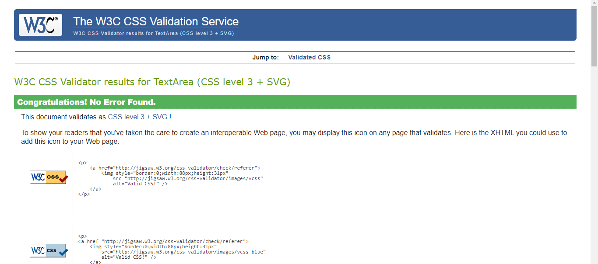

My experience of learning the basic of web development is very interesting. For someone who is not an expert in coding, I found it good. From other modules on the single assignment, I like it. There have been ups and downs on the coding. When I started to code, I have done a few exercises that Thomas gave me. When I started to code, I was struggling. The code shows right on the website however when I was using the validator check for the website there was a lot of errors. From example is the start of the code I put html instead of using the !DOCTYPE html. When I asked Mark for help, he told me a mistake. So, when I have done it, I use the validator and I got no errors. What I learned was when you think you are finished with the code on HTML you have to check the validator to show no errors.
When coding the CSS was very straightforward. The basic was very simple but I was in for a challenged. Trying to use the grid method on CSS was very stressful. Every time I tried to do it; it won’t show up on the page. But looking through my notes on the topic 3 revision I how I didn’t name the grid areas. I successfully used the grid method and the layout is the same for everything.
For doing the mobile css, I had to change the layout to moz-inline-stack so that is will be easy to see the screen.
Trying to do the hamburger icon was also challenged. Trying to make the CSS as mobile was very difficult. Unfortunately, I couldn’t get it to work.
For the Font and colours I made the front as Calibri because it is easy to read and I used that style on word and PowerPoint. The colours of website were unique. I made the font colours different and clear to read it.
HTML validator
Index Validator
Portfolio Validator
Contact Validator
CV Validator
Sitereport Validator
CSS validator
My Style CSS Validator
Mobile CSS Validator
